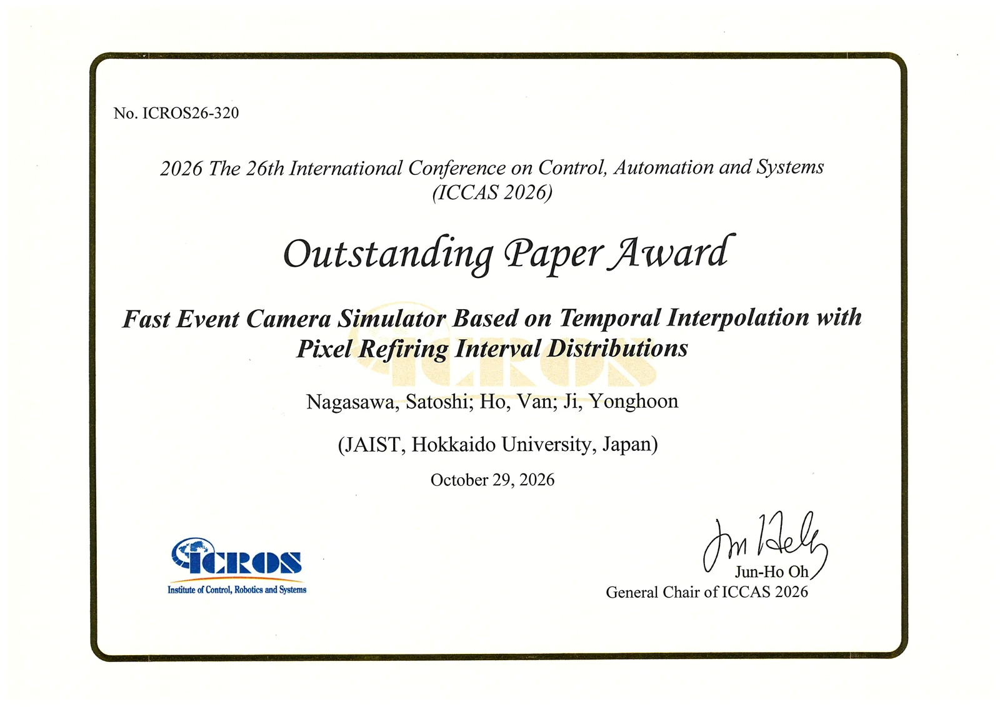
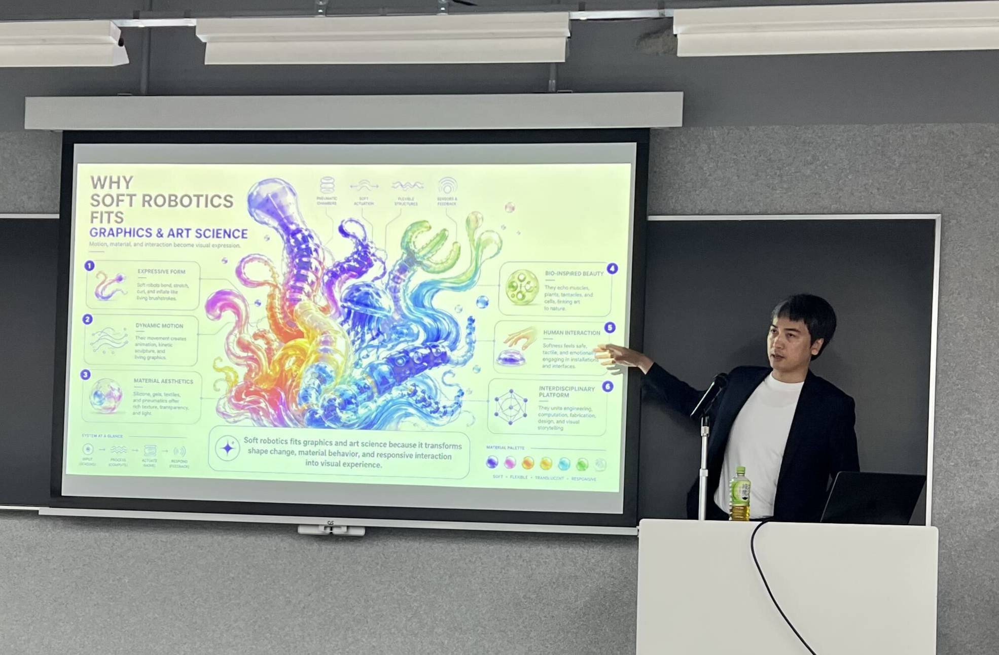
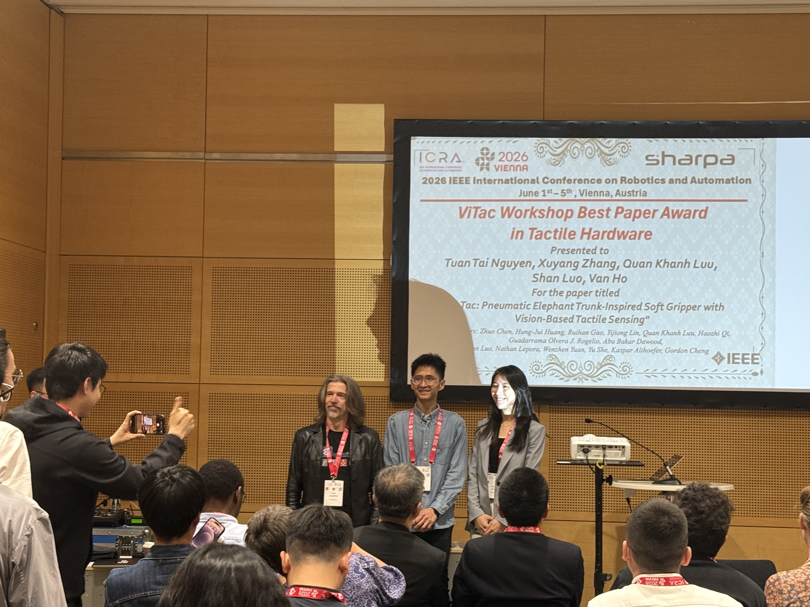
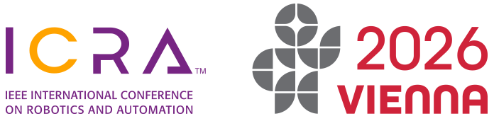
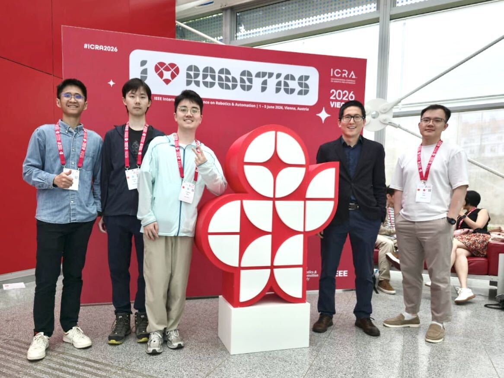
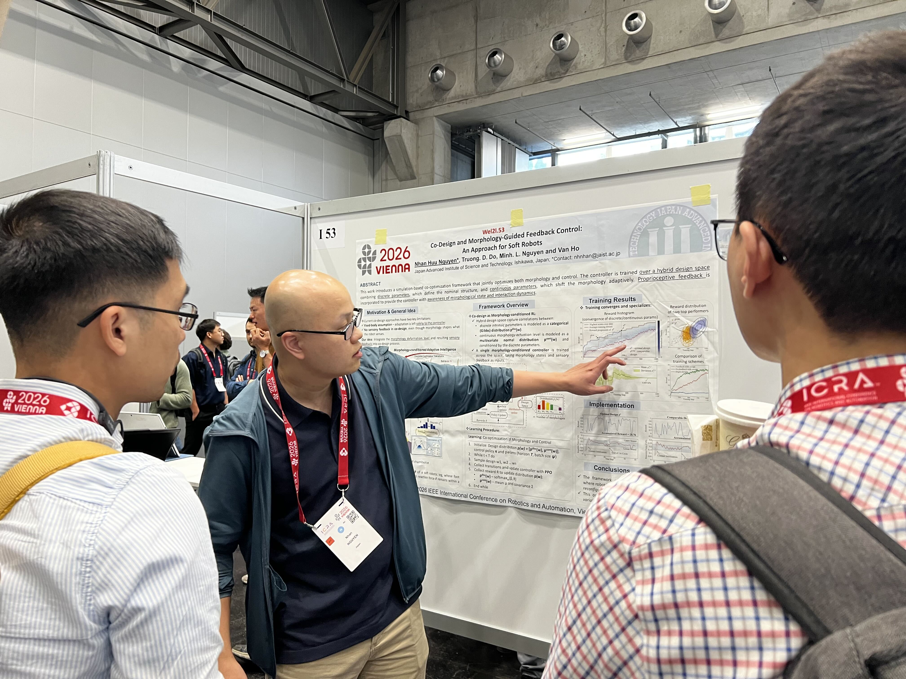
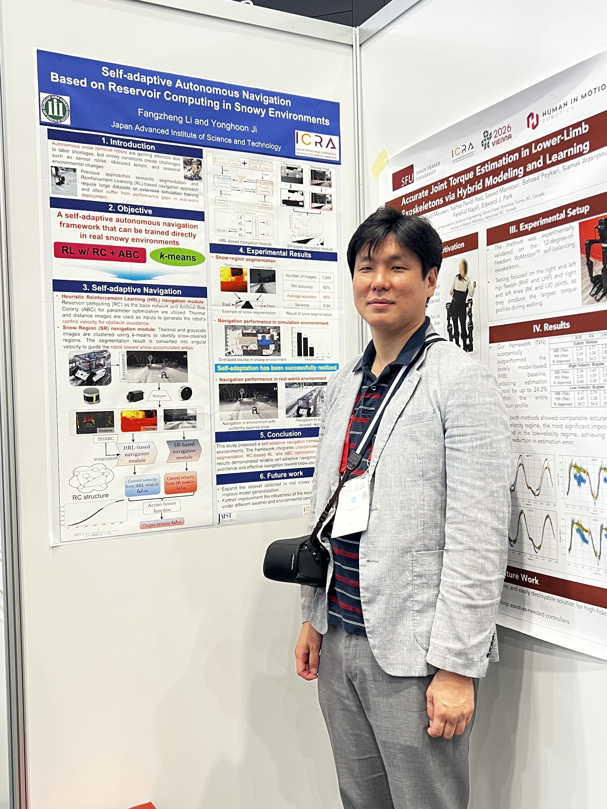

Recent News
Nagasawa Satoshi Receives Outstanding Paper Award at ICCAS 2026
Nagasawa Satoshi, the lead author of the paper "Fast Event Camera Simulator Based on Temporal Interpolation with Pixel Refiring Interval Distributions," received the Outstanding Paper Award at the 26th International Conference on Control, Automation and Systems (ICCAS 2026). The award was presented on October 29, 2026, in recognition of the paper's outstanding contribution.

Professor Van Anh Ho Gives Keynote at NICOGRAPH International 2026
Professor Van Anh Ho was invited as a keynote speaker at NICOGRAPH International 2026, held from June 19 to 21, 2026 at Spiral Towers (IPUT Nagoya) in Nagoya, Japan. His keynote talk, "Soft Robots as Living Graphics: Designing Safe, Expressive, and Interactive Machines through Material Intelligence," discussed how soft robotic bodies can connect robotics, computer graphics, interactive media, and art-science research.
.png)

Nguyen Tai Tuan Receives Workshop Best Paper Award at ICRA 2026
We are pleased to announce that Nguyen Tai Tuan received the ViTac Workshop Best Paper Award in Tactile Hardware at ICRA 2026. The award recognized the paper "PneuTac: Pneumatic Elephant Trunk-Inspired Soft Gripper with Vision-Based Tactile Sensing," co-authored by Tuan Tai Nguyen, Xuyang Zhang, Quan Khanh Luu, Shan Luo, and Van Ho.

MASAIC Members Present Research at ICRA 2026
MASAIC members participated in the 2026 IEEE International Conference on Robotics and Automation (ICRA 2026), held in Vienna, Austria. The team presented recent research outcomes in robotics, including poster sessions and discussions with researchers from the international robotics community.




ROBOHO 2025 - 3rd Hokuriku Robotics Symposium
Our team participated in the 3rd Hokuriku Robotics Symposium, focused on information sharing and collaboration in robotics research in the Hokuriku region. This year's presentations focused on "Body and Intelligence" and "Industrial AI Applications", featuring presentations of research topics and approaches, technical demonstrations, poster sessions, and networking opportunities for collaboration and free discussion.
Location: Kanazawa University Future Knowledge Implementation Center 3F Open Floor (Kyoso-no-Ba)


Two Research Papers Presented at IROS 2025
Our team is presenting two innovative papers at the IEEE/RSJ International Conference on Intelligent Robots and Systems (IROS 2025) in Hangzhou. The presentations showcase our cutting-edge research in soft robotics and multimodal sensing technologies.
Paper 1 (IEEE Robotics and Automation Letters):
"ViZTaP: A Cross-Polarization Based Mechanism for Perception Transition in Tactile-Proximity Sensing with Applications to Soft Grippers"
Session: WeB T3 – Soft Sensors and Actuators | Wednesday, 13:35 - 13:40
Paper 2 (IEEE Transaction on Robotics):
"Terradynamics of Monolithic Soft Robot Driven by Vibration Mechanism"
Session: WeC T22 – Mechanism Design 2 | Wednesday, 15:20

Assistant Professor Nguyen Huu Nhan Receives IEEE RAS Japan Young Award at IROS 2025
We are proud to announce that Assistant Professor Nguyen Huu Nhan from our Robotics & Control Team has been honored with the IEEE Robotics and Automation Society Japan Joint Chapter Young Award at IROS 2025. This prestigious recognition is given to outstanding young researchers for their exceptional contributions to the field of robotics and automation. His award-winning paper, "ViZTaP: A Cross-Polarization Based Mechanism for Perception Transition in Tactile-Proximity Sensing With Applications to Soft Grippers," demonstrates innovative research in tactile sensing technology.


Upcoming Events
No upcoming events at the moment. Check back soon!